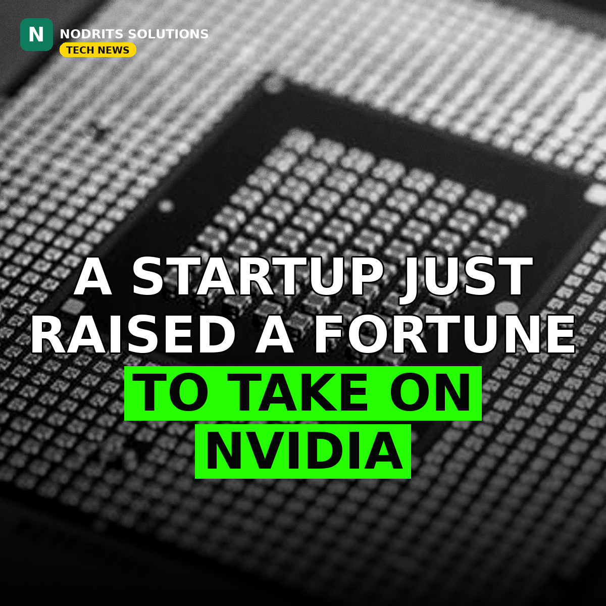

UK AI Chip Startup Fractile Raises $720M at a $7B Valuation

A British AI chip startup most people have never heard of just pulled off one of the biggest chip fundraises of the year — a $720 million round at a $7 billion valuation, with the British government itself among the backers. The target is clear: the AI inference market that Nvidia currently dominates.
What happened
Fractile, a London- and Bristol-based startup building chips designed to improve AI inference — the process through which AI models generate responses — raised $720 million in a Series C funding round, the company told Reuters on Wednesday, November 11, 2026. The round values Fractile at $7 billion, making it one of Britain's most valuable technology startups.
The round was led by Thrive Capital, Founders Fund, Lightspeed and Redpoint. Other investors included Google's venture arm CapitalG, BlackRock, DST Global, Elad Gil, Balderton and SV Angel — alongside Britain's Sovereign AI fund and the British Business Bank. Fractile says its technology can deliver faster performance while cutting energy use and costs, and it plans to launch its first commercial chip next year.
Why it matters
The investment is a major vote of confidence in Britain's push to build domestic AI infrastructure rather than relying solely on overseas suppliers for the computing power behind AI. The market for the hardware behind AI is dominated by Nvidia and a handful of Asian semiconductor manufacturers, and Fractile is betting there is room for a challenger focused on inference — the everyday work of running models, not just training them.
"For too long, Britain has produced some of the world's best scientific ideas, only to see too much of the technology, industry and wealth they create built elsewhere. We are determined to change that." — Kanishka Narayan, UK AI Minister
Britain has made becoming an AI superpower a key part of its economic strategy, building on its strengths in AI research and chip design — it is home to chip designer Arm, whose technology is used in billions of devices — even though its semiconductor manufacturing industry remains small compared with the US and Asia.
What it means for you
Cheaper, faster inference chips would lower the cost of running AI features in real products — from chatbots and copilots to agents that work inside business software. If Fractile's first commercial chip lands next year as planned, expect more competition in the inference market, and more pressure on the prices businesses pay to run AI at scale. For UK tech, it is a signal that big capital is willing to back homegrown chip ambition, not just software.
The Nodrits take
A $7 billion valuation before a first commercial chip ships is a bet on the team and the thesis, not on revenue — and the thesis is sound: inference is where the volume is. The real test comes next year, when the chip has to prove itself against Nvidia's ecosystem. Would you bet on a challenger in the chip race, or is Nvidia's lead uncatchable? Tell us below.
Need a website, SaaS product or AI workflow built right?
Nodrits Solutions designs, develops and automates for businesses in Pakistan, the USA, UK, UAE and Saudi Arabia.
Talk to Nodrits →Sources: Reuters — "UK-backed AI chip startup Fractile hits $7 billion valuation in funding round" (November 11, 2026). Published November 11, 2026.